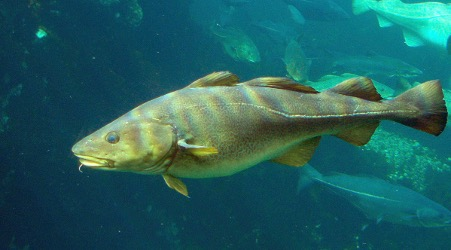
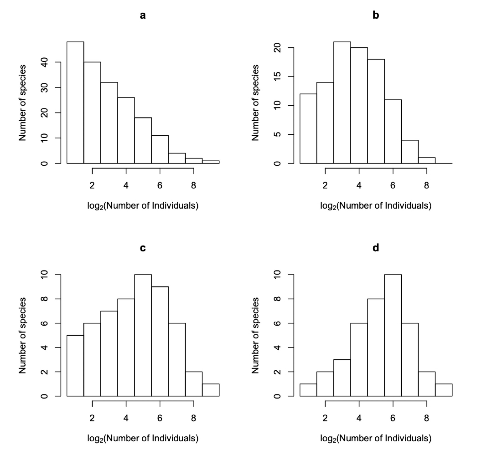

t <- c("00:00","03:00","06:00","09:00", # Times of the day
"12:00","15:00","18:00","21:00")
# Rock habitat
rock_q <- c(150,150,800,1100,1300,1200,800,400,150) # solar radiation
rock_a <- c(18,13,10,14,21,24,22,20,18) # air temperature
# Bush habitat
bush_q <- c(150,150,450,600,650,650,350,200,150) # solar radiation
bush_a <- c(18,13,10,14,21,24,22,20,18) # air temperatureAppendix B — Computational labs
B.1 Ecophysiology of an ectotherm
Solar radiation and convection are the two main pathways for animals such as small lizards. In this case, the total heat flux (f) into the animal is given by the heat flux equation:
\[f = q\ –h*(b - a)\]
\(q\) = solar radiation (cal/h)
\(h*(b - a)\) = heat loss through convection
\(b\) = body temperature of the animal (ºC)
\(a\) = air temperature (ºC)
\(h\) = convection heat transfer coefficient (cal/h/ ºC)
B.1.1 Plotting the climate space
Assuming that air temperature is 21ºC, and h = 60 cal/h, plot the lizard’s equilibrium body temperature as a function of solar radiation. Assume that solar radiation varies between 0 and 1500 cal/h
Draw the climate space of the lizard by drawing the polygon that is limited by the minimum and maximum temperatures that the lizard can support, as a function of solar radiation. Consider that the upper lethal limit for the body temperature (bmax) is 36ºC and the lower lethal limit for the body temperature (bmin) is 24ºC.
Plot the following values of air temperature and solar radiation that are available throughout a day in two locations.
- At which time of the day is the lizard on the rock, and at which time is it at the bush? Is there any time when the lizard cannot be at any of the locations?
B.1.2 Statistical modelling of body temperature
Section 1.4.2 presents a data frame containing data on individuals A. cristatellus living in urban and forested areas in three cities in Puerto Rico, giving us the perfect opportunity to assess the potential thermal effects of habitat upon this species. To do this:
- Make a linear model for individuals of A. cristatellus living only in natural habitats (
context=natural) and another for individuals living in urban habitats (context=urban).
Hint: to filter the data you can use the subset function in R
# example filtering data from anoles only from San Jose sites
df_sanjose <- subset(df, Site == "San Jose")Is there a habitat where lizards are consistently warmer? If so, provide an ecological explanation (quantitatively) for this observation (assume an ambient temperature of 30 °C).
Is your model appropriate for explaining your data?
B.2 Optimal foraging theory
B.2.1 Predator with a strategy for maximizing energy per time.
Let \(a_i\) be the pontual abundance per unit of time of prey type \(i\), \(e_i\) be the caloric content of prey type \(i\), \(h_i\) be the time it takes to consume prey type \(i\), \(e_w\) is the energy expended per unit of time by the predator while searching for prey, and \(e_h\) is the energy expended per unit of time by the predator to ingest prey.
Assume that there are only two types of prey and that:
- Strategy 1 – Chosing prey of type 1
- Strategy 2 – Chosing prey of type 2
- Strategy 3 – Chosing both preys
a) Show that if \(e_1 > e_2\) and \(h_1 < h_2\) then the second strategy is never a optimal strategy (assume \(a_1 = a_2\)).
b) Consider an active predator with the following physiological parameters:
\(e_1\) = 10J; \(e_2\) = 100J; \(h_1\)= 1s; \(h_2\) = 60s; \(e_w\) = 1 J/s; \(e_h\) = 1 J/S
Plot and comment the graph of the energy gain per unit of time for:
- the strategy of consuming both preys; and
- the strategy of consuming only the best prey.
Allow the abundances vary between 0.005 and 0.5 ind/s for the best prey. Consider the abundance of the worse prey to be 0.05 ind/s and 0.01 ind/s.
B.2.2 Predator with a strategy of sit-and-wait.
\(e_w\) is the energy expended per unit of time by the predator while waiting for its prey, \(e_p\) is the energy expended per unit of time by the predator while chasing the prey, \(v\) is the velocity of the predator in chase and \(a\) is the pontual abundance of preys per unit of time.
Consider the following predator and prey parameters:
\(e_w\) = 0.1 J/s; \(e_p\) = 1 J/S; \(v\) = 0.5 m/s; \(a\) = 0.005 ind/s/m2; and \(e\) = 10.
Produce a graph showing the energy gain per unit of time as a function of the size of the feeding territory.
B.3 Evolutionary games
B.3.1 1. The prisoners dilemma competition.
In this class we will have a competition of algorithms for playing the prisoners dilemma.
a) Write a function that takes as parameters two vectors that account with the history of the previous plays and returns one play (i.e., Cooperate - “C” or defect - “D”). This play should try to be the best response to the history of past moves. One example of such a function is:
strat<-function(own,opponent) #create a function with two arguments: my moves
# and my opponent's moves
{
n<-length(opponent) #check the number of moves from the opponent I know
if(n==0) "D" # If the opponent didn't play, I defect
else
if (own[n]=="D") opponent[n] # Else, if my last move was to defect,
# I copy the last move of the opponent
else "C" # Else, I cooperate
}b) Use the function pd_sim (see below) to play your strategy with the strategy of the other groups (ask for each group their function(s)) and with itself, in an iterative game with X moves. Compare the results of the cumulative rewards as well as the sequence of moves. Report to the rest of groups the values of the rewards for each of the tournaments. What was the best strategy? What strategies are best responses to themselves?
pd_sim<-function(p1_strat,p2_strat,n) # Be p1_strat and p2_strat any given strategy
{
# you need to get a matrix (mat) of strategies
w1<-0 #accumulated pay-off (fitness) of player 1
w2<-0 #accumulated pay-offs of player 2
h1<-NULL #history of plays of player 1
h2<-NULL #history of plays of player 2
for (t in 1:n) # we will iterate the game for n times
{
a1<-p1_strat(h1,h2) # stores the play of player 1 based on the history of plays
a2<-p2_strat(h2,h1) # stores the play of player 2 based on the history of plays
p1<-mat[a1,a2] # pay-off for player 1 of this play (based on the pay-off matrix)
p2<-mat[a2,a1] # pay-off for player 2 of this play (based on the pay-off matrix)
w1<-w1+p1 # adds play's pay-off to the accumulated pay off of player 1
w2<-w2+p2 # adds play's pay-off to the accumulated pay off of player 2
h1[t]<-a1 # adds the play to the history of plays of player 1
h2[t]<-a2 # adds the play to the history of plays of player 2
}
list(w1=w1,w2=w2,h1=h1,h2=h2)
# returns the accumulate payoffs of player 1 and player 2,
# and the history of plays of player 1 and 2
}B.4 Dispersal and the random-walk
B.4.1 1. Random walk for 1 individual
a) Write your own code to simulate an individual random walk. Assume that the starting point is always \((x,y) =(0,0)\) and the probability of an individual to choose any direction (i.e. left, right, up or down) is the same. It should be a function taking as argument the number of steps and returning a list of two vectors, one with the \(x\) positions over time and another with the \(y\) positions overtime.
b) Plot the random walks of several individuals on the same graph, using at least 5,000 steps for each individual.
B.4.2 2. Random walk for several (\(n\)) individuals
a) Write your own code to simulate random walks for \(n\) individuals and return the final position of each individual. The function should take the number of individuals and the number of time steps as arguments and return a list containing two vectors: one with the final x -coordinate of each individual and another with the final y -coordinate of each individual.
b) Create histograms showing the distributions of the final \(x\) - and \(y\) -coordinates of 10,000 individuals after 10, 100 and 1,000 time steps.
c) Create a function that takes a vector of values, xlast, a mean value, meanx, and a standard deviation, stdx, as arguments, and returns the log-likelihood of observing those values given those parameters.
d) Find the values meanx and stdx that maximize the likelihood of the observations. Are these values the same as mean(xlast) and std(xlast)? Explain why.
e) Extra credit: Create histograms showing the distribution of the distance from the origin \[sqrt(x^2+y^2)\] for the final positions of 10,000 individuals after 10, 100, 1000 and 10000 time steps. How does the mean distance relate to the length of the random walk? Fit a Rayleigh distribution, \[\left(\frac{r}{\sigma^2}\right) e^{-r^2/(2 \sigma^2)}\] to each histogram using non-linear fitting, and overlay the fitted distributions on the corresponding graphs.
B.5 Pandemic growth
B.5.1 1. The exponential dynamics of the pandemic.
In early 2020, the first wave of the global pandemic of COVID-19 hit several European countries. In this exercise, we will plot data for those countries and fit an exponential-growth model.
a) Load the time series of cumulative numbers of infected individuals during the COVID-19 pandemic in five countries. Each time series should begin when the first 15 infections have been detected.
Data source: https://github.com/owid/covid-19-data/tree/master/public/data 8 Nov 2020
b) Plot the data on a linear plot, using a different colour for each country. What do you observe?
c) Plot the data on a semi-logarithmic scale using the plotting option log=”y”, again using a different colour for each country. What do you observe?
d) Perform a linear regression for each country using the logarithm of the \(n\) values, and estimate the growth rate \(R\). Are the values of R the same for all countries? Do they vary over time?
e) Given that \(R_0=R^\tau\), and that the infectious period (\(\tau\)) lasts 10 days, calculate \(R_0\) for each countries?
f) Write a for loop to simulate geometric (exponential) growth over the time period t = 1:100. Store the population size at each time step t+1 in variable n, based on the population size at time t, using n[t+1]<-R*n[t]. Remember to initialise the population size before the loop: n<-1. Plot a couple of runs of the loop using different values of \(R\), such as \(R=1.01\) and \(R=1.1\), on linear scale.
g) The solution of the geometric growth equation is \(n(t)=n_0 R^t\). Using the same values of R as above, create vectors using this formula, starting with n0 <- 2, and overlay them on the plot.
B.6 Population Viability Analysis
B.6.1 1. Expected time to extinction
Consider a population that grows exponentially but is subject to environmental stochasticity, with the logarithm of its growth rate following a normal distribution with mean \(\bar{r}=\log(\bar{R})\) and variance \(v\). Assume that the population has an on-off density dependence and cannot grow above the carrying capacity K. According to Foley (1994) the expected time to extinction in this population is:
\[T= \frac{1}{s \cdot r} \left[ e^{s\log(K)} \left( 1- e^{-s \log(n_0)} \right) - s \log(n_0) \right],\] where \(s=2r/v\).
a) Plot the mean extinction times, \(T\), as a function of \(r\), \(v\), \(n_0\), and \(K\), commenting on each plot. Use the following ranges:
- \(r\): 0.01 to 0.2 ;
- \(v\): 0.05 to 1.0 ;
- \(n_0\): 0 to 10 ;
- \(K\): 10 to 500 .
Use \(n_0=10\), \(K=100\), \(v=0.3\) and \(r=0.01\) as the baseline parameter values.
b) Write a function to simulate the population dynamics numerically. Begin with the for loop developed in Lab 5 and modify it to include a carrying capacity and a growth rate drawn annually from a normal distribution. The function should accept \(n_0\), \(r\), \(v\), and \(K\) as parameter and return a vector containing the population size over time.
c) Simulate the population dynamics using the following parameter sets:
- \(n_0=3\); \(r=0.01\); \(v=0.2\); \(K=500\);
- \(n_0=100\); \(r=0.01\); \(v=0.2\); \(K=500\).
d) Extended credit: Compare the model predictions with the analytical approximation provided by Foley. Run a sufficiently large number of simulations to approach the predicted extinction times. For example, write a function that calls the function developed in part (b) 100 times and returns the median time to extinction across the simulations.
B.7 Reference
Foley, P. (1994) Predicting Extinction Times from Environmental Stochasticity and Carrying-Capacity. Conservation Biology 8: 124–137.
B.8 The camera trapper
A researcher place camera traps at a grid of sites during 19 days to observe roe-deer.
B.8.1 1. Load the data on the file roe_deer_2016_r.xls into R and briefly describe the structure of the dataset.
B.8.2 2. Case 1: Ignoring detection probability.
Construct a vector that for each site takes value 1 when roe deer is present and 0 when is absent.
Use maximum likelihood to estimate the occupancy probability, \(\Psi\). First, create a function that takes \(\Psi\) and a vector of presence-absence data as arguments and returns the likelihood. Then, plot this function over a range of \(\Psi\) values and determine the value that maximizes the likelihood.
Based on previous research, assume that the occupancy is somewhat between 0.2 and 0.5. Using a Bayesian approach, calculate the posteriori probability distribution for the occupancy \(P(\Psi)\).
Set function for Bayesian approach:
occupancybayesian <- function(v,psi,priorpsi)
{
integrand <- function(x)
occupancylikelihood(v,x)*priorpsi(x)
occupancylikelihood(v,psi)*priorpsi(psi)/
integrate(integrand, lower = 0.01, upper = 0.99)$value
}
Set function for uninformed prior:
uninformedprior <- function(psi)
{
dunif(psi,0.2,0.5)
}B.8.3 3. Use maximum-likelihood estimate both the occupancy probability, \(\Psi\), and the detection probability, \(p\).
B.9 Managing a fishery
B.9.1 1. Consider that you are managing a fishery with the following dynamics:
\[\frac{dn}{dt}=0.2n\left(1-\frac{n}{10000}\right)\]
a) Plot the production function of the fishery, indicating the stock size at which the maximum sustainable yield occurs and the corresponding production level.
b) Suppose you establish an annual quota equivalent to 50% of the maximum sustainable yield. What are the two stock-size levels that sustainably allow this exploitation level?
c) Consider an annual variance of 10% in productivity. Explore what happens when you manage this fishery for 100 years at each of the two stock sizes determined in the previous question.
d) Explain why, in a system with constant quotas, MSY is not stable and should not be the management goal.
e) Discuss how these results relate to the paper by Worm et al. (2009) on the need to rebuild fisheries.

B.10 Road kill
B.10.1 The Red fox
…So, while they may be most active at night. Red foxes are especially active during the daytime in spring and summer (April-Sept) as they are foraging for food to feed their young. …
B.10.2 1. Install the following R packages:
library(readxl)
library(dplyr)
library(sf)
library(ggplot2)
library(fuzzySim)
library(grid)B.10.3 2. Identify road segments with hotspots
a) Load the roadkill dataset and explain its structure.
b) Show that differences in seasonal activity patterns affect the number of red fox–car collisions.
c) Using the False Discovery Rate (fdr) method, how many hotspots were detected for the active season?
d) Based on the FDR method, plot the true and “false” hotspots. Explain the general geographic locations of the hotspots and how they vary between the two seasons.
e) Consider the implications for conservation management.
B.11 The unified neutral theory of biodiversity and biogeography
B.11.1 1. Understanding neutral dynamics
a) The four histograms labeled “a” through “d” represent the species abundance distributions of four local communities, each containing 1,600 individuals. All communities follow the dynamics of the neutral theory under the point mutation speciation model. The corresponding metacommunity is identical for all cases; therefore, the only factor differing among these four local communities is the probability of immigration.

Identify the communities in order of increasing immigration probability and explain your reasoning.
b) Draw the logseries (metapopulation SAD) distribution for several values of \(\theta\) (e.g., 0.1, 1, 10); assume \(x=0.99944\) and \(n=1:10000\). Draw the curves in linear-linear, log-linear and log-log scales and discuss the influence of \(\theta\) for the shape of the distribution. Recall that the logseries is given by
\[ S=\theta \frac{x^n}{n} \]
c) Using the R function vallade.houchmandzadeh.eq plot the S.A.D. for local communities with \(J=16,000\) individuals and different values of \(\theta\) (e.g., 5, 50) and \(m\) (e.g. 0.001, 0.01, 0.1) values. Discuss how different values of \(\theta\) and \(m\) affect the distribution, and explain why.
Warnings:
The function is slow;
In some cases (typically for small values of 𝛳) you may get an error message!
vallade.houchmandzadeh.eq <- function(J=16000, theta=50, m=0.01){
# vallade.houchmandzadeh.eq integral of Vallade and Houchmandzadeh's equation
# equivalent to equation 7 of Volkov et al.
#
# Attention: this function hasn't been fully tested for m=1
### Auxiliary functions:
####################################################################
# function der.eq.7
# derivative of equation (15) of Vallade and Houchmandzadeh
# Attention we are using the same variables as Volkov, therefore we need to
# introduce the terms corresponding to the chain of variables:
# x = mu * w
der.eq.7 <- function(x)
{
#mu <- m * (J-1) / (1-m)
# to avoid overflow we work with logs and only convert at the end
der.equation.7 <- ( log(theta) + cte
+ (theta-1)*log(1-x) - log(x)
+ log.fract.gamma(n+x*mu, x*mu)
+ log.fract.gamma(J-n+mu*(1-x), mu*(1-x)) )
exp(der.equation.7)
}
#######################################################################
# function log.fract.gamma calculates the ln of the fraction with gamma
# functions in equation (7)
log.fract.gamma <- function(a, b)
{
inside1 <- function(aa) {
if(aa <= 1) log(gamma(aa))
else log.stirling(aa)
}
log.num <- sapply(a,inside1)
inside2 <- function(bb) {
if(bb <= 1) log.den <- log(gamma(bb))
else log.den <- log.stirling(bb)
}
log.den <- sapply(b,inside2)
fraction <- log.num - log.den
return(fraction)
}
#######################################################################
# function log.stirling
# calculates the log of the stirling approximation of the gamma function
log.stirling <- function(x)
{
pi <- 3.1415926
pi.t <- 0.5 * log(2*pi)
extra <- log(1 + 1/12/x + 1/288/x/x -139/51840/x^3 + 571/2488320/x^4)
log.st <- -x + (x - 0.5)*log(x) + pi.t + extra
return(log.st)
}
#######################################################################
bin.nospp <- function(data){
# this function bins data assuming that the data is in the format
# line 1 - number of species with one individual
# line 2 - number of species with two individuals
# line 3 - etc.
#quartz(width=9,height=7)
#layout(matrix(c(1,2,3),3,1))
NN <- 40 # no of bins
no.p <- length(data)
n <- 1:NN
bin <- rep(0,NN)
pow2 <- 2^n
ini <- 1
nfin <- trunc(log(no.p)/log(2) + 1)
for (i in 1:nfin){
fin <- pow2[i]-1
if(fin > no.p) fin <- no.p
bin[i] <- sum(data[ini:fin])
if(fin > no.p) break
ini <- fin + 1
}
y <- bin[bin>0]
x <- 1:length(y)
plot(x, y, xlab=substitute(paste(log[2],"(Number of individuals)",sep="") ),
ylab="Number of species",
main="Hubbell's binning method",
type="h", lwd=30, lend=1)
legend("topright",c(paste("J=",J),as.expression(substitute(theta==tt,list(tt=theta))),paste("m=",m)),bty="n")
lines(x,y,col="red")
}
####### End of auxiliary functions #######
res.int <- numeric(J)
J <<- J
theta <<- theta
m <<- m
if(m==1){
for(i in 1:J){
f1 <- log.fract.gamma(J+1,J+1-i)
f2 <- log.fract.gamma(J+theta-i,J+theta)
res.int[i] <- theta/i*exp(f1+f2)
}
}
else{
mu <<- m * (J-1) / (1-m)
ct1 <- log.fract.gamma(mu, J+mu)
for(i in 1:J){
n <<- i
cte <<- (ct1 + log.fract.gamma(J+1, J-n+1)
- log.stirling(n+1) )
res <- integrate(der.eq.7, 0, 1)
res.int[i] <- res[[1]]
}
}
bin.nospp(res.int)
}d) Extra credit The exercise is based on https://hankstevens.github.io/Primer-of-Ecology/diversity.html#neutral-theory-of-biodiversity-and-biogeography
1) Install and upload the package untb:
install.packages("untb")
library(untb)Read the instructions on the package and briefly describe the information inside it.
2)
If you type
a <- untb(start=rep(1:20, 25), prob=0, gens=2500, D=9, keep=TRUE)you will get a matrix, describe the data found in the matrix.
Plot the results to see how the identities change through time at time steps 1, 100, 2500. A single point represents an individual and the different colours represent the different identities, and create the three graphs at the three time points, with the appropriate data, colours, and titles.
3) Describe what you obtained in the three previous plots.
4) Plot the abundance distribution using the following instructions.
layout(matrix(1:3,ncol=3))
par(mar=c(5,4,1,1))
for(i in times){
plot(as.count(a[i,]),
ylim=c(1,max(as.count(a[2000,]))), xlim=c(0,20))
}
par(mar=c(6,4,1,3))
out <- lapply(times, function(i) preston(a[i,]) )
bins <- matrix(0, nrow=3, ncol=length(out[[3]]) )
for(i in 1:3) bins[i,1:length(out[[i]])] <- out[[i]]
#bins
colnames(bins) <- names(preston(a[times[3],]))
for(i in 1:3){
par(las=2)
barplot(bins[i,], ylim=c(0,20), xlim=c(0,8), ylab="No. of Species",
xlab="Abundance Category" )
}Describe the species rank abundance distributions and the relationship between the number of species and abundance category.
B.11.2 References:
Hubbell, S.P. (2001). The Unified Neutral Theory of Biodiversity and Biogeography. Princeton University Press. ISBN 9780691021287.
Rosindell et al (2011). The Unified Neutral Theory of Biodiversity and Biogeography at Age Ten. Trends in Neutral Ecology & Evolution, 26(7). https://doi.org/10.1016/j.tree.2011.03.024
Stevens, M. H. 2009. A Primer of Ecology with R. First edition. Springer.
B.12 Monitoring biodiversity
B.12.1 1. Exploring the North American Breeding Bird Survey (BBS) dataset
a) Load the file Florida.csv into R and briefly describe the structure of the dataset.
b) Map the monitored transects/routes in Florida. Use the maps library to plot Florida’s counties as a base map.
c) For transects 4 and 109 in 2018, calculate the species richness, Shannon index, \(H^{'}\), and evenness \(J\) for both transects, where \[ H^{'} = - \sum p_i \ln p_i \] and \(p_i\) is the proportion of individuals belonging to species \(i\). Compare the results for the two transects.
d) Plot the species-abundance distributions and abundance ranks for both transects. What do you observe?
e) Choose one transect and plot its species richness, Shannon index, and geometric mean abundance over time.
f) Extra credit 1: Produce a map showing the trends in one of these metrics across Florida, for instance, by coloring different points according to the trend.
g) Extra credit 2: Estimate the number of species in Florida by combining the different transects and using one of the available estimators. Use bootstrap and/or jacknife to calculate confidence intervals.